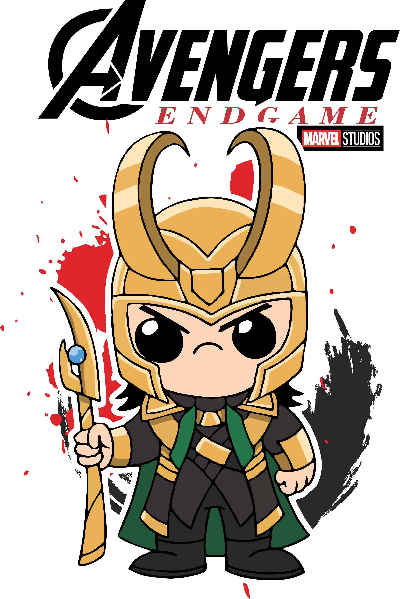

Loki (Loki Laufeyson) es un personaje ficticio que aparece en los cómics estadounidenses publicados por Marvel Comics. Creado por el escritor Stan Lee, el guionista Larry Lieber y el dibujante Jack Kirby, una versión del personaje apareció por primera vez en Venus # 6 (agosto de 1949). La encarnación moderna de Loki apareció por primera vez en Journey into Mystery # 85 (octubre de 1962). Él es el hermano adoptado y, a menudo, el enemigo del superhéroe Thor. Loki se basa en la deidad nórdica del mismo nombre y, a veces se describe como un antihéroe.
Loki ha aparecido en varias series en curso, series limitadas y series de realidad alternativa, incluyendo su propia serie de 4 números Loki (2004). Fue el personaje principal de Journey into Mystery desde los números 622 a 645, y apareció en los nuevos números de Jóvenes Vengadores en 2013. Comenzó a aparecer en su serie en solitario Loki: Agent of Asgard en 2014 y nuevamente en 2016 con Vote Loki. El personaje también apareció en mercadería asociada de Marvel, incluyendo series de televisión animadas, ropa, juguetes, videojuegos y películas.
